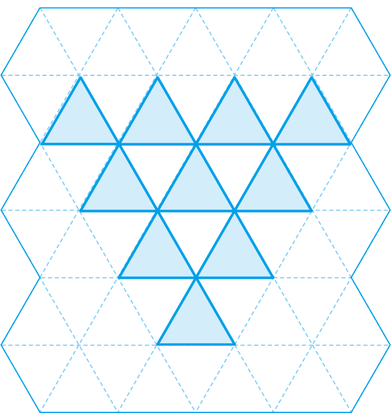

- 1~3
- 1
- 2
- 3
- 4~6
- 4
- 5
- 6
-
[1~3] 삼각형의 배열을 보고 물음에 답해 보세요.
첫째둘째셋째 -
1 넷째에 알맞은 모양을 그려 보세요.
넷째 -
2 배열에 사용된 삼각형의 수를 표에 써 보세요.
첫째둘째셋째순서 첫째 둘째 셋째 넷째 삼각형의 수 13610 -
3 다섯째 배열에 사용될 삼각형의 수를 구해 보세요.
첫째둘째셋째15 -
[4~6] 도형의 배열을 보고 물음에 답해 보세요.
첫째둘째셋째 -
4 배열에 사용된 삼각형의 수를 표에 써 보세요.
첫째둘째셋째순서 첫째 둘째 셋째 삼각형의 수 357 -
5 배열에 사용된 직사각형의 수를 표에 써 보세요.
첫째둘째셋째순서 첫째 둘째 셋째 직사각형의 수 246 -
6 넷째 배열에 사용될 도형의 수를 표에 써 보세요.
첫째둘째셋째도형 삼각형 직사각형 도형의 수 98